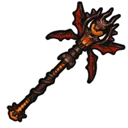

Invocador das Grisáreas
Cajado · Tier 10 · Nível 31
Invoca todos os tipos de criaturas das Grisáreas. Esse lugar é horrível, então elas adoram ser invocadas!
Atributos
Ataque
470
Vida
22
Economia
Valor
700.000
Tempo de fabricação
8h 40min
XP do comerciante
69.500
Trabalhadores: Carpinteiro 25, Feiticeiro 21, Sacerdotisa 18
Receita


Marcos do projeto
6
Tempo de fabricação -25%
16
Valor +25%
28
-60 Madeira
45
-5 Éter
70
Chance de qualidade +1